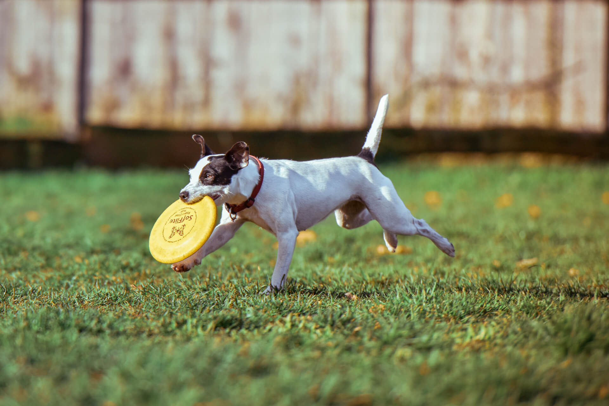
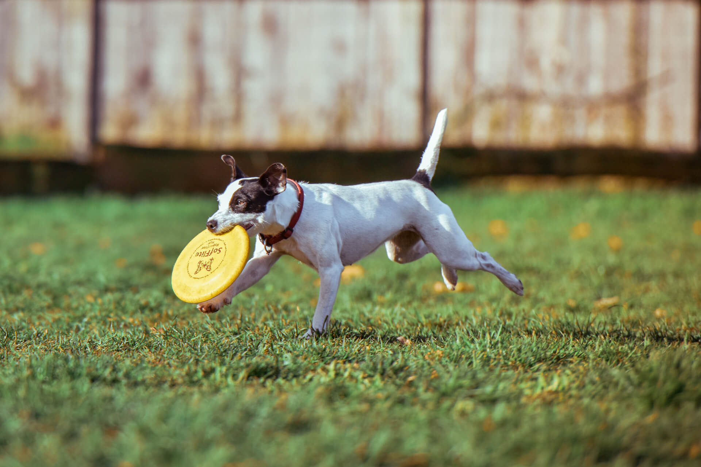
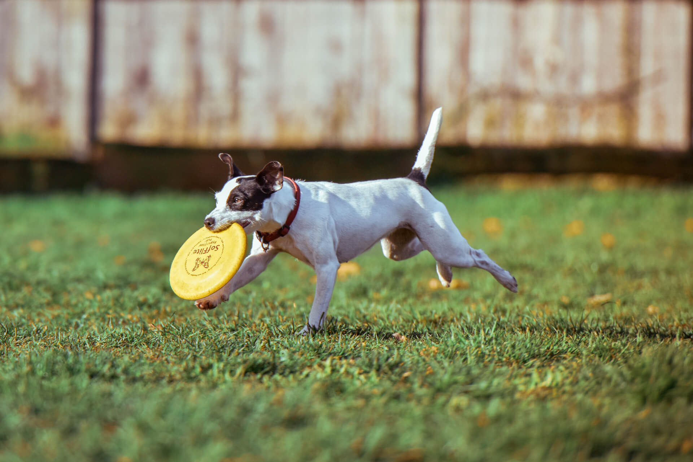
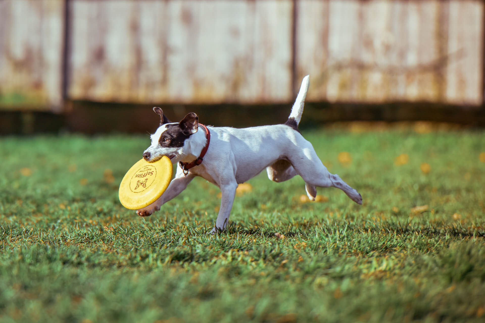

Saving Grace is a non-profit, 501-C3 organization dedicated to helping homeless animals in our community find permanent, loving homes where they will be treated as family members for the rest of their lives.
“It has been a true saving grace for the dogs here at the shelter to go to Molly at Saving Grace. So many dogs and puppies have been given a second chance at wonderful, loving forever homes through the rescue. Being a county shelter, I have very limited resources. Saving Grace makes it possible for me to help change and save lives. I believe that what Molly is doing makes a huge impact and difference. I wanted to be a part of that so I joined her team, and now I'm part of the great mission. it just doesn't get any better than this…” —Lisa Carlson
Amy Johnson
“I first volunteered at Saving Grace with a coworker for our company sponsored volunteer day. I really enjoyed the day and was amazed by the beautiful farm that the dogs have to roam around.”